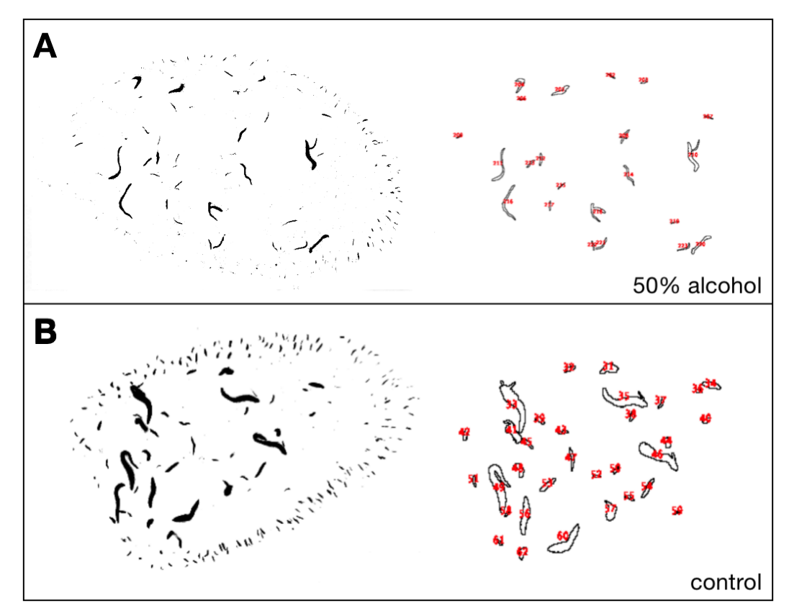

CYTOOPHIDIA
KEY WORDS
INSTRUCTOR
Liu JiLong: Vice Dean, Professor
Introduction
Drosophila has been considered as an model organism on the study of drunkenness for a long time. The addiction mechanism and behavior have been thoroughly studied. However, there is still a research gap on the effect of alcohol on reproduction. At the same time, recently as a newly discovered cell structure, Cytoophidia is distributed in Drosophila, bacteria and human body, which provides a new research direction for Drosophila drunken model.
Abstract
Drosophila has been considered as an model organism on the study of drunkenness for a long time. The addiction mechanism and behavior have been thoroughly studied. However, there is still a research gap on the effect of alcohol on reproduction. At the same time, recently as a newly discovered cell structure, Cytoophidia is distributed in Drosophila, bacteria and human body, which provides a new research direction for Drosophila drunken model. Cytoophidia is an evolutionarily conserved subcellular structure formed by CTP synthase, which can regulate the concentration of free CTP synthase in cells through assembly and decomposition. The distribution and morphology of cytoophidia in follicular cells and nurse cells can be easily observed under the confocal microscope. In this study, Drosophila was used as the model organism, fed with wet yeast which made up with alcohol. The ovary was dissected from the ovary and stained by biomarker. We can observe the distribution and morphology of cytoophidia through the fluorescence signal under confocal microscope. Focusing on the cytoophidia in nurse cell at stage 8, the experiment come into a conclusion based on observation and data analysis. We initially proved that alcohol can affect the ovary cytoophidia of Drosophila. We observed that the number of Drosophila ovary cytoophidia decreased, and the significance analysis concluded that the number was significant at the 10% significance level. Slight changes were also observed in the thickness, distribution, and morphology of the cytoophidia. These changes may cause abnormalities in cell physiology and metabolism, and even cause disease.
Background
Introduction to model organisms -- Drosophila melanogaster
Drosophila melanogaster, as a classic model organism, is one of the most thoroughly studied organisms which is widely used in the biological research in genetics, physiology, microbial pathogenesis and so on. We use Drosophila melanogaster as our model organism in our experimental design, which is thought to have the following advantages:
Oogenesis of Drosophila ovary
The follicles of Drosophila melanogaster are developed by polytrophic meroistic egg cells. In this system, the entire cyst moves through the ovary as a unit. The basic unit of the ovary is the ovariole; Each ovary has between 16 and 20 ovariole, each containing its own independent stem cell and egg chamber at different stages of development. Each egg chamber in the ovary is made up of three kinds, an oocyte, a nurse cell, and a follicle cell. From the germarium at the anterior of the ovariole to the fallopian, the egg gradually matured until it can be fertilized. The whole oogenesis process can be divided into 14 stages morphologically (Figure 2). In the first stage of oogenesis, germ stem cells (GSCs) divide asymmetrically to produce one germ stem cell and one germ oocyte. The reproductive oocyte undergoes four mitotic divisions to form a vesicle of 16 cells. One of which differentiates into oocytes and the other 15 into nurse cells. Follicular cells originate from the mesoderm and surround the egg compartment during prophase of oogenesis. Follicular cells continue to proliferate through mitosis until stage 6, producing up to 1000 cells around the egg compartment. After that, the follicular cell and nurse cell enter the endoreduplication stage which only DNA is copied but the cell is not divided. The follicular cell usually experiences 6-8 endoreduplication cycles, whereas the nurse cell experiences 10-12 endoreduplication cycles. Follicular cells differentiate into different groups, including epidermal cells, during mid oogenesis, stages 7-10. From stage 10b, the normal internal circulation of follicular cells around oocytes stops and the gene amplification cycle begins(Godt and Tepass, 1998).

Cytoophidia
Cytoophidia, found in the oocytes of Drosophila, is named because of its linear shape and snake-like appearance. Originally, cytoophidia was studied as a type of cilia. In the study of the pathogenesis of neurodegenerative diseases which use Drosophila melanogaster as model organism, filamentous structures are found in follicle cells, nurse cells and oocytes of Drosophila ovary after immunofluorescence staining of ovarian tissues of female Drosophila melanogaster with 4 antibodies against Cup from different sources. There is about one filamentous structure in each follicle cell, while larger and thicker filamentous structure can form in nurse and oocyte cell, the number of which is one to several. The shape and number of these structures are similar to cilia, and it is thought that a new cell type with cilia had been found in Drosophila. However, a significant feature of the cilia is that one end is connected to the centriole. While subsequent studies on this filamentous structure found that it is not necessarily related to the centriole. Therefore, the hypothesis that this filamentous structure is cilium is rejected and name the new filamentous structure as the cytoophidia.
Subsequent research has looked for the protein that marks the cytoophidia. The previous Cup antibody accidentally found the cytoophidia due to its impurity, and the cytoophidia could not be labeled after affinity purification, which confirmed that there was no Cup protein in the cytoophidia. However, the extensive antibody screening is inefficient, and the work was not progressing smoothly. Coincidentally, M. Buszczak had randomly inserted green fluorescent protein (GFP) into Drosophila proteins and established several hundred Drosophila strains. There are also proteins in this Drosophila green fluorescent protein library that form filamentous structures in the shape of cytoophidia. Immunochemical staining of samples from the two strains using the previously impudent anti-CUP antibody revealed perfect co-location, with GFP from both strains being independently inserted into cytidine triphosphate synthase (CTPs). The distribution of cytoophidia in Drosophila ovary cells was observed by CTPs antibody reagents from various sources, and the existence of CTPs in cytoophidia was finally proved. Surprisingly, however, although the biochemistry and structure of CTPs have been studied deeply over the past six decades, the discovery of the formation of this cytoophidia structure is still amazing. In addition, the cytoophidia structure has been found in Drosophila, Bacteria, Metabolomyces, Archaea and even human cells, so it can be considered that the cytoophidia structure is widely existed from prokaryotic cells to eukaryotic cells and is evolutionally conserved.
Results
Build of Drunken Drosophila
In this experiment, We used Drosophila melanogaster of the w1118 wild type and CTPS-mCherry strain, and after the use of the alcohol-prepared medium, the flies showed the following responses. Slowed movement, Drosophila became less mobile in the medium and moved at a significantly reduced speed. There is a greater tendency to stay on the tube wall rather than at the top of the tube. Drosophila without alcohol treatment overwhelmingly assembled at the top of the medium tubes, as normal Drosophila would have the behavioral characteristic of congregating upwards physically and would only stop briefly or pass by even if they passed by the wall of the tube. However, after incubation in an alcohol medium, Drosophila increased the time spent on the tube wall and reduced the aggregation behavior at the top of the medium tube. These behaviors are consistent with human drunkenness, and it is believed that Drosophila do have human-like "drunkenness" behaviors, and we can begin to develop subsequent experiments.

Observation of Cytoophidia staining
Collected by confocal microscopy observation, the processed image allows precise observation of the cells in the ovary in relation to the Cytoophidia. In the figure, DNA (white) is seen using DAPI staining. In contrast, CTPS (pink) is shown by mCherry fluorescence, and it can be observed that in stage 8 follicles, follicular cell Cytoophidia are shorter, with only one in each follicular cell. In contrast, Cytoophidia in trophoblast cells are both short and thicker, and the shape of this Cytoophidia varies, with long, ring-shaped, and Some may even be entangled. The number of Cytoophidia in each trophoblast cell is not fixed, with multiple Cytoophidia present.
Effect of alcohol on the number of Cytoophidia
In alcohol-treated Drosophila ovaries, we found some variation in the distribution of follicular Cytoophidia at the same time. We selected stage 8 follicles for comparison, and the Cytoophidia at this stage were the most complete and easy to observe. By observation, we can find that the Cytoophidia in alcohol-treated Drosophila trophoblast cells may look less numerous. The distribution of Cytoophidia in Drosophila ovaries without alcohol treatment would appear to be more disorganized and numerous. Therefore, we performed the next step in the quantitative count.
We can observe the distribution and number of Cytoophidia through software processing. The image on the left is a grayscale processed, color-inverted CTPS map, while on the right is the outline of the Cytoophidia outlined by particle analysis. Comparing the experimental and control groups, the Cytoophidia were thinner and generally reduced in number in the experimental group. Of the four sets of data performed, the mean number of Cytoophidia in the control group was 28.25, with a standard deviation of 6.72. The mean number of Cytoophidia in the experimental group was 40.75, with a standard deviation of 5.16. Based on this data, a significance analysis was performed, and a p-value of 0.433 was obtained, meaning that the results were significant at the 10% significance level. Therefore, we believe that alcohol causes an effect on the number of Cytoophidia in Drosophila ovaries, resulting in a decrease in the number. We also observed in the images that the thickness of the Cytoophidia that ingested alcohol also changed, becoming thinner when observed with the naked eye. Most of the shapes were predominantly striped, with a reduced proportion of curly shapes. However, the experimental analysis based on this has not been completed, and no definite conclusion can be drawn. Only a possibility is proposed.
